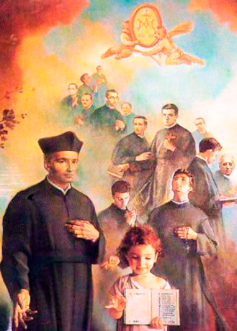

David Carlos de Vergara Marañón es reconocido por la Iglesia Católica como Beato y mártir. La Santa Sede publicó el documento apostólico Beati estis, mediante el cual el papa Juan Pablo II concedió los honores de beatos a Dionisio Pamplona y sus doce compañeros mártires. El documento señala expresamente:
“Fr. David Carlos Marañón, frater opifex”se registra su nacimiento en Asarta el 29 de diciembre de 1907 y su muerte en Gabasa el 28 de julio de 1936.
La causa de beatificación se desarrolló mediante los procesos canónicos correspondientes. La Santa Sede señala que el 15 de diciembre de 1994 se promulgó el decreto sobre el martirio y que se estableció la celebración del rito de beatificación para el 1 de octubre de 1995. Ese día, en Roma, Juan Pablo II proclamó beatos a los miembros de este grupo de mártires.La fórmula oficial de beatificación incluyó a:
“Dionysius Pamplona et duodecim Socii”Es decir, Dionisio Pamplona y doce compañeros.
